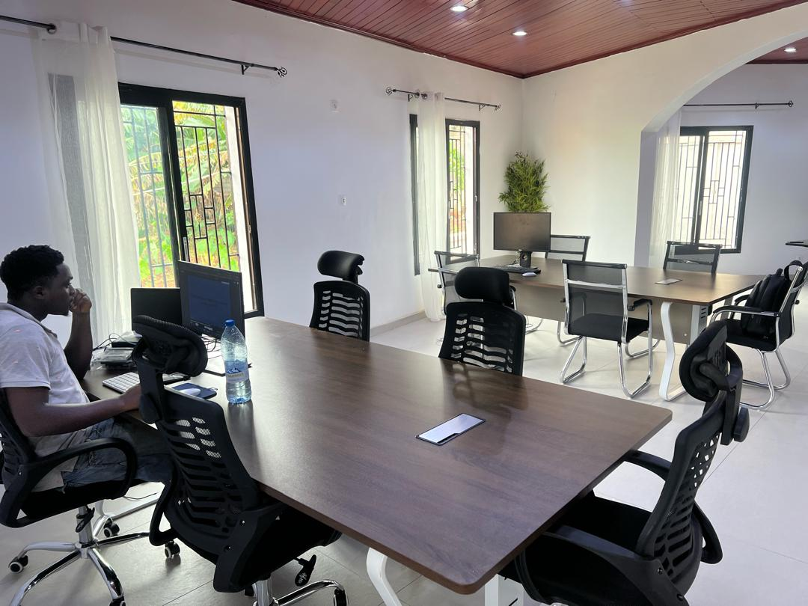

Atori Space
Yaoundé
Throughout October, Atori Space becomes a Hacktoberfest House, with a permanent open-source table, a Contribution Board and a QR code to the OSSCameroon Telegram group.
Open Hack Evenings
Tuesday · 18:00–21:00
Thursday · 18:00–21:00
No talks or workshops: bring your laptop, work, ask for help and meet other contributors. Other hubs can run their own sessions.
Get directions